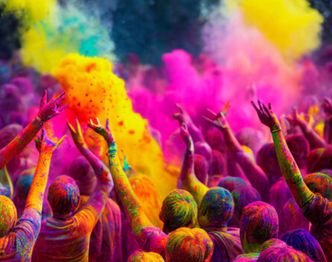

Onam - Kerala's harvest festival

Onam is the biggest festival in Kerala, celebrated with joy and enthusiasm by people of all communities. It marks the homecoming of King Mahabali. Festivities include Pookalam (flower decorations), Onasadya (traditional feast), Vallamkali (snake boat race), and traditional dances.
Holi - Festival of Colors
Holi, known as the Festival of Colors, is celebrated across India in spring. People play with colored powders and water, sing and dance, and enjoy festive sweets like gujiya. Holi symbolizes the victory of good over evil and the arrival of spring.
Christmas - Festival of Joy

Christmas, celebrated on December 25th, marks the birth of Jesus Christ. It is a time of joy, giving, and togetherness. People decorate Christmas trees, exchange gifts, and enjoy festive meals. The holiday symbolizes love, compassion, and goodwill.